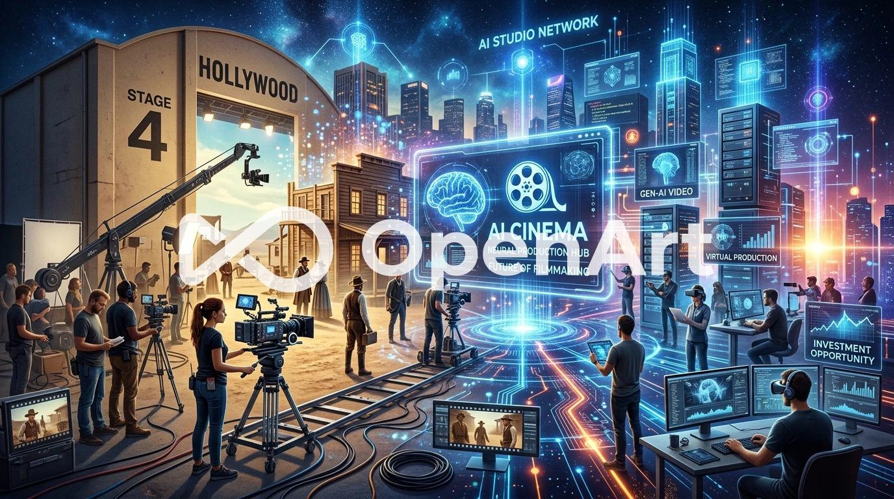
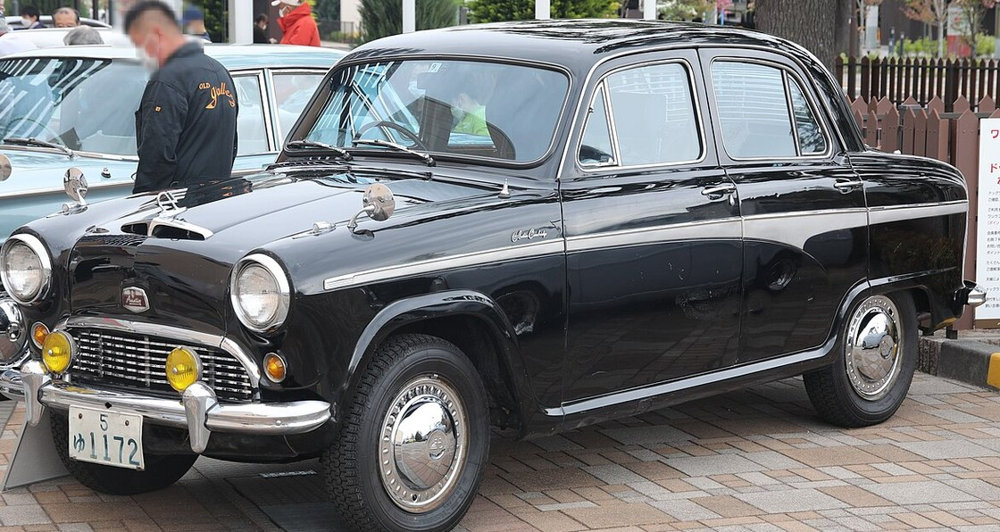
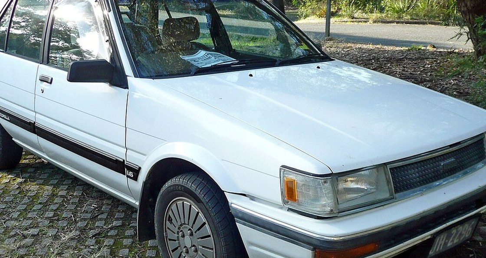

東アジアを21世紀のハリウッドにするための、AI映像制作ハブとなる会社のシード投資のご案内
中華圏の最先端技術に日本のクオリティーコントロールとIPを融合させ、世界市場を取りに行く企業を設立
5年後・2031年、東証グロース市場への上場を目指す。
中国を中心に世界のAIクリエイターを集め、企業案件と越境C2C発注で回すプラットフォームをつくる。
矢野経済研究所。2027年度は5,400億円の予測
企業案件の仲介（初日から）＋ 越境C2C発注の手数料（6ヶ月目〜）＋ ツール外販（2期〜）
追加はシリーズA 3億のみ。累計4.5億で上場まで届く設計
出遅れている日本、淘汰が始まった中国。そして優秀なAIクリエイターが行き場を失っている今がチャンス
1四半期で −42%。制作力が市場に溢れ出しています。ただし淘汰されているのは、広告出稿で視聴者を取りに行った会社です。作る力そのものは市場に残っています。
当社が取るのは制作力であって、彼らが負けた土俵（視聴者獲得の消耗戦）には乗りません。
日本に制作ハブを置き、中華圏の技術を束ねて世界市場を取りに行く
AI映像制作ハブを日本に置く。
中華圏の最先端技術に、日本のクオリティーコントロールとIPを載せて世界へ出す。
②のプラットフォームは、①③で積んだクリエイターが無ければ受け手がいません。プラットフォームが先ではなく、制作が先です。
そして①②③で溜まった制作データが、内製化・特許・モデル外販（P4）の原料になります。ここが企業価値の本体です。
市場は制約になりません。制約はクリエイター獲得と発注者獲得の資金です
2024年度 4,238億円 → 2027年度 5,400億円【実測・矢野経済研究所】
2025年 8,855億円から拡大。縦型動画広告は前年比155.9%【実測】
②が面する市場。動画編集はこのうちの一部【推計】
| 当社が取りに行く帯 | 発注者 | 現状の制作費 | AI導入後 | なぜここか |
|---|---|---|---|---|
| ★ 企業VP・会社紹介 | 法人 | 50〜150万円 | 18〜52万円 | フル生成AIが成立する。撮影が消えて原価が半分以下になる |
| ★ 展示会・イベント映像 | 法人 | 20〜100万円 | 6〜30万円 | ループ素材は特に効く。閑散期を埋める |
| ★ PR素材・SNS縦型 | 個人・中小 | 10〜50万円 | 2〜10万円 | ②の主戦場。量産前提で件数が出る |
| 映画・テレビCM | — | 3〜5億／1,000万〜1億 | ▲20〜50% | 桁は変わらない。当社は取りに行かない |
米国では企業動画の制作費中央値が 1分あたり約63万円 → 約38万円 に下落済み。日本も追随します。
だから制作だけで終わらせず、①の自動化機能をツール外販（P4）へ移します。時限は3年と見ています。
「誰がお金を払うのか」で見ると、法人と個人では市場の性質がまったく違います
国内動画制作サービス市場（2025年度予測）。2024年度 4,238億円 → 2027年度 5,400億円【実測値・矢野経済研究所】
スキルシェア市場全体の2028年予測。動画編集はこのうちの一部にすぎず【直接の統計は存在しません】
クリエイターエコノミー（2024年）。これは発注市場ではなく報酬市場です【混同しないこと】
| 企業案件（法人が発注） | 個人案件（個人が発注） | |
|---|---|---|
| 1件あたり単価 | 20万〜200万円（制作会社）／代理店経由は100万〜1,000万円 | 5,000円〜30万円。簡易編集は1,000円台も |
| 発注者 | 事業会社の広報・マーケ部門／広告代理店／制作会社 | YouTuber・配信者・インフルエンサー・個人事業主 |
| 取引の場 | 相見積 → 稟議 → 発注書 → 検収 → 請求 | ココナラ・ランサーズ・クラウドワークス（PFが仲介） |
| 与信・請求 | 必要。ここが個人クリエイターには越えられない壁 | 原則プラットフォームが代行するため不要 |
| 市場の性質 | 単価が高く件数が少ない。参入障壁が高い | 単価が低く件数が多い。初級案件は完全な買い手市場 |
個人が発注する市場は小さく、統計すら整備されていません。国内C2C（ココナラ等）で個人が中国のクリエイターに直接発注できないのは、言語・決済・品質保証・契約の壁があるからです。
当社はこの壁をシステムで引き受け、越境の発注を成立させます。法人案件（②）は従来どおり当社が受注して配分します。
削減が効くのは「人が動く工程」です。撮影・機材・出演で費用の55%。ここが1/5になると単価が根本から変わります
| 用途 | 現状の制作費 | AI導入後 | コストメリット | 削減率 | AIの効き方 |
|---|---|---|---|---|---|
| 映画（実写） | 3〜5億円 | 2.4〜4億円 | ▲6,000万〜1億円 | ▲20% | 部分適用のみ。VFX・群衆・背景 |
| アニメ映画 | 1〜20億円 | 7,000万〜14億円 | ▲3,000万〜6億円 | ▲30% | 中割・背景・彩色の自動化 |
| テレビCM（制作費） | 1,000万〜1億円 | 500万〜5,000万円 | ▲500万〜5,000万円 | ▲50% | 実写×生成AIのハイブリッド |
| ★ 企業VP・会社紹介 | 50〜150万円 | 18〜52万円 | ▲32〜98万円 | ▲65% | フル生成AIが成立。撮影が消える |
| ★ 展示会・社内イベント映像 | 20〜100万円 | 6〜30万円 | ▲14〜70万円 | ▲70% | 同上。ループ素材は特に効く |
| ★ PR素材・SNS縦型 | 10〜50万円 | 2〜10万円 | ▲8〜40万円 | ▲80% | 量産前提。1本あたりが最も下がる |
★ 下3行がフル生成AIの成立帯です。当社が取りに行くのはこの帯です。映画・CMは部分適用にとどまり、桁は変わりません。
企画15→7.5／撮影38→7.6／機材10→2.0／出演7→0.7／編集20→10.0／諸経費10→7.0。撮影・機材・出演の55%が10.3まで落ちます。編集と諸経費は残ります。
両面市場です。ただし②があるため、発注がゼロの初日からクリエイターに報酬を出せます
| 入口 | 当社 | 出口 | 位置づけ | |
|---|---|---|---|---|
| ① | 日本・海外の個人と中小事業者 映像を作りたいが、中国に直接発注できない |
当社プラットフォーム 要件定義テンプレート・AI翻訳・成果物の自動チェック・決済 |
中国の映像クリエイター 制作パートナー経由で受注し、報酬を受け取る | 取引手数料 |
| ② | 日本の発注企業 事業会社・広告代理店・制作会社 |
当社が受注し、配分 要件定義・品質保証・契約・与信・請求 |
登録クリエイター 再生数ゼロでも稼げる | 差益 |
| ③ | ①②で溜まる制作データ 指示→初稿→修正→承認／修正回数・検収通過率 |
内製化してモデル開発 工程のツール化・生成AI関連の特許取得 |
プロダクト外販 粗利率80%以上・人数に比例しない | ライセンス |
両面市場の宿命は「クリエイターは発注がないと来ない、発注者はクリエイターがいないと来ない」。
②は発注者を必要としません。案件を配ればクリエイターは集まり、その登録クリエイターが①の初期供給になります。
発注者からの回収は Stripe。当社で資金を預からない収納代行型を前提としています。
中国のクリエイターへの支払いは中国の映像制作パートナー企業を経由。第三者と同条件・証憑を残す運用です。
資金決済法の該当性は弁護士に確認中です。［確認事項］
⚠ アダルトは対象外です（受注する案件にも、①に載せる作品にも含めません。決済・法規制・ストア審査が理由）。差別化の核心は価格ではなく、発注側の管理コストをゼロにすることです。
売上20億が何の積み上げなのかを、1本・1取引・1契約あたりで示します
| 金額 | 備考 | |
|---|---|---|
| 売上 | 50.0万 | 企業発注の中央値54万より保守的に設定 |
| 個人クリエイターへの支払 | ▲12.0万 | Bランク。有償テスト課題で確定させる |
| 一次レビュー報酬 | ▲3.0万 | Aランクに委託 |
| AIツール・素材・レンダリング | ▲2.0万 | |
| 品質バッファ（作り直し） | ▲1.5万 | ここを原価から外さないこと |
| 売上総利益 | 31.5万（63%） | 計画は保守的に60%で置く |
| 金額 | 備考 | |
|---|---|---|
| 発注者が支払う額（GMV） | 9.0万 | 個人案件の相場レンジの中位［仮置き］ |
| 当社の取引手数料 18% | 1.62万 | 国内C2Cの約22%より低く置く |
| 決済手数料・インフラ | ▲0.24万 | Stripe等 |
| 売上総利益 | 1.38万（85%） | 人が介在しないので件数に比例しない |
| 5期 年間3万件 | → 4.86億 | GMV 27億 × 18% |
| 年間単価 | 5期の契約数 | 5期の売上 | |
|---|---|---|---|
| 制作会社（法人） | 320万 | 250社 | 8.0億 |
| 個人クリエイター | 12万 | 2,100人 | 2.5億 |
| 合計 | 10.5億 |
⚠ 76%が「人手に比例しない収益」です。①の手数料と③の外販は、件数や契約数が増えても人員が比例して増えません。だからSaaS寄りの評価（PSR 6〜8倍）で見ています。
3本の柱。人手に比例しない収益（①③）を5期に76%まで上げます
| 収益ライン | 型 | 開始 | 5期の売上 | 備考 | |
|---|---|---|---|---|---|
| P1 | 映像制作の受注 → クリエイターへ配分 | フロー | 初日から | 4.8億 | 粗利率60%。売上が人手に比例する |
| P2 | 越境C2C発注の取引手数料 | ストック | 6ヶ月目〜 | 4.9億 | 手数料率18%［仮置き］。仲介業務を自動化したもの |
| P4 | 制作ツール・モデルの外販 | ストック | 2期〜 | 10.5億 | 粗利率80%以上。①の自動化機能をそのまま外販する |
当社が仲介でやっている作業を、制作会社とクリエイターが自分で使える形にして売る。
だから①とP4は別物ではなく、同じシステムの内側と外側です。2期から外販を始めるのはこのためです。
国内C2C（ココナラ等）の約22%より低く置いています。越境の壁を引き受ける対価としていくら取れるかは、PF公開後に実測します。
版権コストの安い順に着手します。D から始め、他社PFでの実績が出てから A へ
| 対象IP | 座組 | 版権コスト | 出口 | |
|---|---|---|---|---|
| D | パブリックドメイン（青空文庫・古典） | 権利処理が不要。単独で制作できる | ゼロ | 他社PFに投入し、実績づくり |
| B | 自治体・企業のキャラクター | 受託（②と同じ）。先方が権利者 | ゼロ（先方負担） | 自治体PR・企業広報・ふるさと納税 |
| C | 個人作家・Web小説（なろう系・pixiv） | 作家と直接レベニューシェア | ほぼゼロ（成功報酬型） | 他社PFの課金枠へ供給 |
| A | 中小出版社の既刊マンガ（未映像化作品） | 原作使用許諾＋レベニューシェア | 数万〜数十万／作品 | 他社PFの看板作品・海外展開 |
作った作品は他社のプラットフォーム（YouTube・TikTok・ショートドラマ各社）で稼ぎます。
この作品群からの収益は5年計画に計上していません。①③の制作力とデータを作るための投資という位置づけです。
契約に「AI利用の可否と開示方法」を必ず明記します。JIAA調査でも受容条件1位は「AI利用が明記されている」37.6%。
国はコンテンツを輸出産業にすると決め、予算を3倍にした
経産省「エンタメ・クリエイティブ産業戦略2026」
令和6年度補正 101.1億円 → 令和7年度補正 350.2億円
2兆1,700億円。市場全体は3兆8,400億円
いずれも後払い（精算払い）で、入金が1年以上先になります。資金繰りの当てにはできません。取れた場合は上振れとして扱います。
クリエイター側は中国PF、発注者側は国内C2C。どちらとも正面からは戦いません
当社の行が空欄であることが、このページの主張です。
トラフィックがゼロの新規PFが「うちに投稿してください」と言っても、経済合理性がありません。快手1億／百度10億級のトラフィックプールとは桁が違います。
中国のPFは純AIコンテンツの分成を圧縮し、最低保証を廃止。リソースは実写短劇へ移りました。
ここが唯一の入口です。ただし方針が戻れば消える時限付きです。
| ココナラ・ランサーズ・クラウドワークス | 当社 | |
|---|---|---|
| 発注先 | 国内のフリーランス | 中国の映像クリエイター |
| 越境発注 | 導線が無い。言語・決済・品質保証・契約が壁 | その壁をシステムで引き受ける |
| 手数料 | 約22% | 18%［仮置き］ |
分成率ではなく、3つの別の理由で選ばれる設計にします
ココナラ・ランサーズ・クラウドワークスに、中国のクリエイターへ発注する導線はありません。
言語・決済・品質保証・契約の4つが壁で、個人同士の直接取引が成立しないからです。当社はその4つを機能として持ちます。
初日はクリエイター側だけを取りに行きます。②の企業案件が、その口実と原資になります。
発注者の獲得は6ヶ月目のPF公開以降です。①②で取引のある相手から載せるので、広告費を先に張る必要がありません。
最大の課題は両面市場のコールドスタート。②の企業案件が、この輪を回り始める前に断ちます
この輪が回り続けるのが、両面市場のコールドスタートです。② は発注者を必要としません。案件を配ればクリエイターは集まり、その登録クリエイターが①の初期供給になります。
| 残りの課題 | 解決方法 |
|---|---|
| 分成率で大手に勝てない | 分成率では戦わない。企業案件・AIを冷遇しない方針・日本市場への窓の3点で選ばれる設計にする |
| 発注者を集められない | PF公開（6ヶ月目）まで投下しない。①②で取引のある制作会社・クリエイターを先に載せ、供給がある状態で開く |
| 制作の市場単価が下がる | 3年の時限と見ている。①の自動化機能をツール外販（P4）へ移して逃げ切る |
| 中国本土から当社PFに接続できない可能性 | 投稿・決済の経路を設計段階で検証。国内向けミラーまたは提携PF経由の導線を用意する |
| 成果物の品質が担保できない | 審査基準に組み込み、品質判定の自動化を特許①として出願。検収通過率と修正回数のデータを学習側に回す |
労働集約型の受託は、売上が人手に比例するため「規模の割に伸びない事業」と読まれます。
だから追うべき指標は売上ではなく、人手に比例しない収益（①③）の比率です。5期で76%。
（記入予定）
［記入予定］（実在の映像制作会社と提携）
クリエイターへの発注・支払いはこのパートナーを経由します。
制作データと成果物の権利は、契約により日本側（当社）に帰属させます。
代表の経歴と実績 ／ これから採用する職種・時期・採用チャネル ／ アドバイザー・顧問
越境C2C発注PFとツール外販を同じシステムで作るため、1年目からエンジニアが必要です。
| 1期 | 2期 | 3期 | 4期 | 5期 | |
|---|---|---|---|---|---|
| 日本側 人員 | 6名 | 16名 | 30名 | 44名 | 60名 |
| 中国側 登録クリエイター | 8〜10名 | 15〜18名 | 25〜30名 | 45〜55名 | 70名前後 |
| 1人あたり人件費 | 500万 | 700万 | 800万 | 900万 | 1,000万 |
3期まで赤字が前提。通期黒字化は4期、上場申請は5期です
| 売上の内訳（百万円） | この期の到達点 | |
|---|---|---|
| 1期 | 制作27 ／ C2C 9 | 制作54本・PF公開・登録100名 |
| 2期 | 制作105 ／ C2C 54 ／ 外販20 | ツール外販の初期契約／シリーズA 3億 |
| 3期（N-2期） | 制作200 ／ C2C 162 ／ 外販160 | 監査開始。赤字がほぼ均衡まで戻る |
| 4期（N-1期） | 制作320 ／ C2C 324 ／ 外販504 | 通期黒字化。内部管理体制の構築 |
| 5期（N期）→ 2031年 上場 | 制作480 ／ C2C 486 ／ 外販1,052 | 売上20億・営業利益6.1億 |
5期（2031年）での上場を逆算。N-2期の監査開始は3期・2028年10月です
2期（2028年）に監査法人のショートレビューを受ける必要があります。赤字が最大化する期に監査法人を確保できるかが関門です。シリーズAの契約書を持って臨みます。
グロースは2030年3月以降「上場5年経過後に時価総額100億円」の維持基準が新設されました。2031年上場なら2036年に100億円。
当社の想定時価総額は121〜161億（中心141億）で、維持基準に対して41%のバッファがあります。
5期の売上20億・営業利益6.1億を前提に、3手法で試算しています
当期純利益 約4.1億（実効税率33%）× PER 20〜40倍
売上20億 × PSR 6〜8倍。売上の76%が人手に比例しない収益なのでSaaS寄りで見る
EBITDA 約6.7億 × 8.9〜15倍（情報通信業の中央値8.9倍）
中心値は 時価総額 141億円 ─ グロースの上場維持基準（2036年に100億円以上）に対し 41% のバッファ
⚠ すべて「成功した場合」の試算です。2025年のグロースIPOは18社（前年34社から半減）で、IPO市場そのものが縮んでいます。倍率は市況で変動します。
各フェーズは「ゲート条件」で区切ります。満たさない限り、次へは進みません
| 時期 | やること | ◆ 次へ進むゲート条件 |
|---|---|---|
| 〜2026/12 | 法人設立・PF要件定義・中国パートナーとの契約 | PF仕様の確定／法務の見解書（資金決済法）／パートナー契約の締結 |
| 2027/1-3 | 制作の受注開始／PF開発 | 制作 累計5本・粗利率60%／ディレクター時間 8時間 |
| 2027/4-9 | PF公開（6ヶ月目）・発注者の獲得開始・D案IPの投入 | 制作 1期54本／登録100名・成約100件／手数料率と平均単価の初回実測 |
| 2期 | 制作体制の拡大・ツール外販の立ち上げ | ツール外販 法人8社／シリーズA 3億／監査法人ショートレビュー |
| 3期 | 赤字の縮小・ツール外販の本格展開 | 人手に比例しない収益62%以上／監査開始 |
| 4期 | 通期黒字化・内部管理体制の構築 | 通期黒字化／人手に比例しない収益72%／流通株式25%の設計合意 |
| 5期 | 上場申請 | 年商20億・営業利益6.1億／時価総額141億 |
［仮置き］手数料率18%・平均単価9万円で、5期のC2C売上4.9億を置いています。ここが半分なら2.5億です。
PF公開直後（2027/4-9）に必ず測ってください。以降のすべての売上計画が、この2つの数字に乗っています。
調達目標 1.5億円。融資を使わず、全額をエクイティで調達します
1,000万未満に抑え、初年度の消費税課税事業者化を回避
放出20〜27%を想定。J-KISSでの価格先送りも選択肢
1年目に使うのは 9,380万。残り約5,600万は2期への持ち越しです。
PF開発を初期版に絞り、広告費を先に張らない設計にしたぶん、2期へ厚く回せています。
シリーズA 3億は2期の実績を見てから臨めます。
①③は人手に比例しないので、規模を追うための大型調達が要りません。シリーズB以降は想定していません。
［仮置き］C2C発注の件数と手数料率が未実測のため、P2の売上の精度が最も低い数字です。PF公開後に実測して増減させます。
影響度と発生確率で並べています。上の3つが、この事業の生死を分けます
| # | 影響度 | 発生確率 | リスク | 対策 |
|---|---|---|---|---|
| 1 | 高 | 高 | 制作の市場単価が下がる | 3年の時限と見ている。①の自動化機能をツール外販（P4）へ移して逃げ切る |
| 2 | 高 | 中 | 発注者が集まらない | PF公開まで投下しない。①②で取引のある相手を先に載せる。伸びなければ企業案件に軸足を戻す |
| 3 | 高 | 中 | シリーズA 3億が入らない | ツール外販の開発を止めて制作に全振り。2期の赤字は▲6,700万→▲1,000万台まで縮む |
| 4 | 高 | 中 | 資金決済法の該当性 | 収納代行型（当社で預からない）を前提にPF設計の前に弁護士へ確認。法務費用400万を初年度に計上済み |
| 5 | 高 | 低 | 営業・エンジニアが採用できない | 2次受け（代理店経由）を主軸に置けば律速がディレクターに移り、採用難易度が下がる |
| 6 | 中 | 中 | 中国の制作パートナーへの依存 | 支払いと品質保証を1社に依存しない。2社目の提携を2期までに確保する |
| 7 | 中 | 中 | 中国本土から当社PFに接続できない | 設計段階で検証。国内向けミラーまたは提携PF経由の導線を用意 |
| 8 | 中 | 低 | クリエイターの離脱 | 登録は常に稼働数の1.5倍。春節（1〜2月）の稼働低下も計画に織り込み済み |
3〜8が全部外れても、制作受託（②）は残ります。プラットフォームが伸びなくても事業が消えない構造にしてあります。
中国では制作会社の42%が1四半期で消え、日本の映像制作市場は4,580億円で伸び続けています。
輸入した技術を4年で国産化し、その後20年以上の改善で世界一の品質に到達した

1959 日産オースチン A50

1986 トヨタ カローラ
日産・トヨタは国産化をゴールにせず、以後20年以上かけて生産方式と品質管理を磨き続けました。1980年代には米国メーカーが日本の生産方式を学びに来る側に回ります。
内製化（3年）は出発点にすぎません。制作データで改善を回し続けることが、模倣されない資産になります。
| 持っている側 | 修得する側 | 期間 | 到達点 | ||
|---|---|---|---|---|---|
| 1952 → 1956 | オースチン（英） | 技術 → | 日産・日野・いすゞ | 4年 | 完全国産化。ただしこれは入口 |
| 2026 → 2029 | 世界のAIクリエイター | 制作力 → | 当社 | 3年 | 内製化。ここから改善を回す |
⚠ 当時は政府の保護（輸入制限・関税）がありました。今のAI映像にはありません。だから改善のサイクルをより速く回す必要があります。